Introducción
Uno de los grandes problemas que está enfrentado la sociedad venezolana, es el incremento
de los índices delictivos, por diversos factores, tales como la violencia intrafamiliar, el consumo de
drogas en los jóvenes, el alto costo de la vida, entre otros, aunado a esto se puede apreciar poca
planificación de las tareas y actividades que son desarrolladas por muchas instituciones policiales
y las políticas erradas en materia de seguridad ciudadana que limitan a dichas instituciones para
que puedan ser más eficientes y eficaces a la hora de abordar el delito en todas sus vertientes,
siendo esta una problemática que afecta también al Estado Táchira.
Comprendiendo que la seguridad Ciudadana es una responsabilidad de todos y cada uno de
los ciudadanos que hacen vida dentro del ámbito Político Territorial del Estado Táchira, siendo una
competencia ejercida de manera exclusiva por el Estado Venezolano. De esta manera, el Desarrollo
Organizacional en el Ámbito de la Seguridad, Caso Policía del Estado Táchira, ayuda a comprender
lo que sucede en las áreas más neurálgicas que afectan el funcionamiento interno y externo de la
institución policial, lo que, a su vez, permite que los funcionarios responsables de su dirección
puedan generar estrategias adecuadas a esa realidad, tanto en la parte administrativa como en la
parte operativa de la institución. Por consiguiente, se debe establecer una matriz (F.O.D.A.) que
permita ver cuáles son las Fortalezas, Oportunidades, Debilidades y Amenazas presentes en el
manejo de la institución, lo que conllevara a identificar y evaluar cuáles son las áreas críticas y
vulnerables que tiene la Policía del Estado Táchira, y así generar las estrategias de acción que
permitan diseñar las políticas adecuadas, para aumentar los niveles de eficiencia y eficacia de la
organización en lo interno y externo.
Como es bien conocido, los órganos de seguridad ciudadana, específicamente las policías
uniformadas deben ser concebidas como una institución pública, cuya finalidad es brindar
seguridad a las personas y proteger sus bienes, este servicio es de carácter civil y funciona apegado
al marco de la Constitución de la República Bolivariana de Venezuela y a las Leyes y Reglamentos
que rigen la materia dentro del ordenamiento jurídico venezolano, fundamentada en el respeto de
los derechos humanos. Esta concepción que rige el funcionamiento de la Institución Policial a nivel
nacional, se encuentra establecida de manera clara y precisa dentro de la Ley Orgánica del Servicio
de Policía y del Cuerpo de Policía Nacional, (2008), la cual en su Artículo número 3, señala
taxativamente lo siguiente:
El servicio de policía es el conjunto de acciones ejercidas en forma exclusiva por el
Estado a través de los cuerpos de policía en todos sus niveles, conforme a los lineamientos y directrices
contenidos en la legislación nacional y los que sean dictados por el órgano Rector,
con el propósito de proteger y garantizar los derechos de las personas frente a las situaciones
que constituyan amenazas, vulnerabilidad, riesgo o daño para su integridad física, sus
propiedades, el ejercicio de sus derechos, el respeto de sus garantías, la paz social, la
convivencia y el cumplimiento de la ley.
La Policía del Estado Táchira, como representante del orden interno deberá velar por la
seguridad y tranquilidad de nuestro pueblo, sin discriminación de ningún tipo, es una institución
armada, cuyas armas nunca deben ser utilizadas contra el pueblo, sino para la protección del mismo,
debe ser capaz de resolver los conflictos que a diario se le presentan a través de la mediación y
negociación, tiene normas generales de actuación para todos los funcionarios, es una institución
cuya misión es procurar el mantenimiento del Orden Público, cumplir y hacer cumplir el
ordenamiento jurídico vigente, así como todas aquellas disposiciones que emanen de los Poderes
Públicos legalmente constituidos, atendiendo a garantizar la vida, la propiedad, la moralidad y la
convivencia familiar.
Aunado a ello, existen una serie de aspectos tanto administrativos y de funcionamiento
organizacional que inciden en la calidad del funcionamiento policial; como organización social se
apoya en los principios básicos de la administración para analizar la situación actual del Instituto
Autónomo de Policía del Estado Táchira en lo concerniente a planificar, organizar, dirigir ,
supervisar y evaluar las acciones y tareas emprendidas a fin de obtener la mayor eficacia y
eficiencia posible con los medios que se cuenta. La planificación es una fase fundamental del
proceso de la administración y como tal puede ser estudiada, ya que la misma traza el camino a
seguir por la organización; planificar se relaciona con prever lo que se va a realizar en el futuro,
sea atendiendo al tiempo de duración o a la manera como se establecen; de manera que
planificación significa lo contrario a realizar las cosas de manera improvisada, existen diversas
clasificaciones, para Requeijo (2008) en función del tiempo empleado puede ser en corto, mediano
y a largo plazo, También se pueden diseñar planes de contingencia, alternativos, normativos y
estratégicos.
Existen otras taxonomías como la reseñada por Corredor (1986) el cual contempla la
planificación administrativa, la normativa y la estratégica, en cuanto a la administrativa señala que
es el tipo de planificación tradicional que surge como parte del proceso de administración, respecto a la
normativa la relaciona con los objetivos del sistema, ya que las metas de la planificación son
los objetivos del sistema y finalmente la estratégica la describe como el conjunto de tácticas que
tengan probabilidad de alcanzar los objetivos de la empresa. Esta última es de gran importancia en
las organizaciones ya que permite priorizar las necesidades y contingencias producto del día a día
y requieren solventarse de manera expedita para transformar y mejorar la funcionalidad
organizacional. Diez, García, Martin & Periañez (2000) consideran a “la planificación como la
función más importante del proceso administrativo, ella es esencial para que las organizaciones
logren óptimos niveles de rendimiento, estando relacionada con ella, la capacidad de la
organización de adaptarse al cambio” (p. 5). En el caso de nuestro objeto de estudio la organización
policial cumple múltiples las funciones entre las que se mencionan la prevención de delitos,
cuidado y mantenimiento del orden público, resguardo de ciudadanos aprehendidos, vigilancia y
patrullaje inteligente, servicio de policía comunal, de ahí la importancia de estudiar la estructura y
funciones de los sectores estratégicos, en el ámbito de la seguridad ciudadana para detectar los
problemas que ocasionan dificultades en la organización y buscar la mejora en su funcionamiento.
De esta manera, frente a la situación problemática descrita, lo que se pretendió a través de la
investigación, fue realizar un estudio detallado en cuanto al funcionamiento del Instituto Autónomo
de Policía del Estado Táchira (IAPET), en el desempeño de sus funciones relacionadas con la
seguridad ciudadana, partiendo para ello de enfoques y procedimientos que han sido establecidos
por las ciencias administrativas, con el propósito de dar a conocer a sus directivos, la forma en que
actualmente se encuentra organizada esta institución y como se viene ejecutando el
desenvolvimiento de la labor que le ha sido asignada. Visto así, la investigación está orientada al
desarrollo de un objetivo general, partiendo para ello del análisis del funcionamiento
organizacional del IAPET en el ámbito de la seguridad ciudadana. Esta información permitirá
alcanzar los objetivos específicos planteados para el desarrollo de la investigación, con lo cual se
podrá abordar una posible solución a la problemática objeto de estudio. El Desarrollo
Organizacional, constituye un medio útil, en el manejo y comprensión de la problemática de los
factores internos y externos que afecta el desenvolvimiento de las áreas administrativa y operativa
de la institución, por lo que es importante conocer cuál es la opinión de las diferentes autoridades
oficiales sobre seguridad ciudadana en la región servirán dar respuestas a las interrogantes que a
continuación se han establecido como orientadores del objeto de estudio.
Metodología
La presente investigación de acuerdo a su origen, es un estudio que se apoya en el paradigma
cuantitativo, como un estudio de campo, el nivel análisis es descriptivo y el diseño de investigación
a seguir es de carácter no experimental. El presente estudio se enmarca en el paradigma
cuantitativo, el cual para Gómez (2006) “confía en la medición numérica, el conteo y el uso de la
estadística para intentar establecer con exactitud patrones en una población” (p. 60).
En esta investigación se aplicó un cuestionario a una muestra estratificada, los cuales
expresan una realidad la cual se cuantifica numéricamente las respuestas y se procesan apoyándose
en el uso de la estadística en este caso la descriptiva, como técnica de análisis para describir las
tendencias prevalecientes de cada pregunta. Los datos se recogieron directamente de la realidad,
como fuente primaria los oficiales, supervisores y comisionados que cumplen funciones y laboran
en el IAPET. la información fue recabada de la fuente primaria, sin manipulación de ningunos de
los elementos que puedan alterar la misma, constituyendo esto una de las principales características
de la investigación de campo.
La muestra estuvo conformada por oficiales, supervisores y comisionados, que conformaron
los tres (03) niveles organizacionales (operacional, táctico y estratégicos) del IAPET, con el fin de
conocer de manera directa las opiniones de informantes fundamentales de dicho instituto policial,
en total, la muestra fue de 141 participantes. En cuanto al instrumento utilizado en el presente
estudio, se aplicó un cuestionario de preguntas bajo una escala de estimación de Likert, además se
le incorporaron dos preguntas abiertas a dichas instrumento las cuales fueron dirigidas a recabar
información de la muestra en estudio.
Revisión literaria
Desarrollo Organizacional
De acuerdo con Achiles (1983) en Cano (2003) “el desarrollo organizativo es un proceso
dinámico, dialectico y continuo de cambios planeados a partir de diagnósticos realistas de la
situación “(p. 53). Por su parte, French & Bell en Chiavenato (2003) la definen como:
…esfuerzo a largo plazo apoyado por la alta gerencia para mejorar procesos de solución
de problemas de renovación organizacional, en especial mediante un diagnóstico eficaz y colaborador, y la
administración de la cultura organizacional (con énfasis especial en
los equipos formales de trabajo, equipos temporales y cultura intergrupal), con la
asistencia de un consultor-facilitador y el empleo de teoría y tecnología de la ciencia
aplicada al comportamiento, incluidas la acción y la investigación (p. 647.).
Ferreres & Molina (1995) identifican algunos supuestos básicos que fundamentan el DO:
- Es una respuesta a los cambios: la palabra cambio alude a la variación de una realidad
o situación organizacional, de manera que los gerentes progresistas se preocupan por
desarrollar estrategias que permitan los cambios para la mejora del funcionamiento.
- El cambio debe ser planeado: el proceso de cambiar algo debe ser diseñado a partir
de los datos proveniente de los informantes y de lo observado, ya que ellos obtienen
valiosos beneficios si el resultado es adecuado.
- Las organizaciones son sistemas abiertos: la organización es considerada como un
conjunto de elementos interrelacionados e interconectados en algo llamado sistema.
El sistema se compone de otros subsistemas como la parte social, la técnica y la
operacional, los cuales se conectan con un sistema mayor. De manera que en los
procesos de cambio se deben considerar las implicaciones y las relaciones entre los
componentes. Es decir, se debe prestar atención a las diferentes partes relacionadas
con el sistema. Otro aspecto a considerar es la capacidad de adaptarse y mejorar con
el tiempo, como mecanismo auto correctivo tienen potencial de utilizar información
para detectar problemas y corregirlos sobre la marcha.
- Necesidad de participación y compromiso: uno de los objetivos del DO es trabajar
colaborativamente, lo que conlleva a dejar a un lado la estructura jerárquica y darles
a los empleados una participación importante en la toma de decisiones. Para lograr
ese cambio se debe transformar la cultura organizacional cambiando las actitudes,
creencias y actividades de los miembros.
- Incremento de eficacia y bienestar en la organización: existen diversos criterios para
decir que una organización es eficaz. En este sentido, Beckhard (1998) en Ferreres &
Molina (1995) señala entre los criterios a considerar los siguientes: a) El trabajo es
realizado de manera planificada; b) Las decisiones se toman en base a información realista; c) Los
gerentes reciben incentivos o recompensas por su trabajo; d) La
comunicación no se distorsiona sea en sentido vertical u horizontal; e) Las personas
son proactivas dispuestas a resolver los conflictos y problemas; f) Se invierte energía
en tareas y proyectos, poco en conflictos interpersonales; g) La organización es un
sistema abierto; h) Tendencia a que las personas mantengan su integridad y
singularidad en un ambiente interdependiente e i) Se opera con actitud de accióninvestigación, creándose
mecanismo de retroalimentación para que los individuos y
grupos aprendan de su propia experiencia.
En este sentido, cabe destacar que el DO estudia la organización de manera holística, en los
aspectos estructurales, operativos, técnicos y culturales, con la finalidad de establecer cambios
planeados en la dinámica organizacional, tomando en cuenta para ello a los miembros de la
organización, en este caso la Policía del Estado Táchira, a quienes tienen funciones directivas y al
entorno. Cano (2003) señala que “se trata de un enfoque global en lugar de proyectos separados y
descoordinados que procura el cambio en tres etapas: a) Diagnóstico de problemas, b) Respuesta a
los problemas y c) Evaluación a las respuestas a los problemas” (p. 54). Por tal motivo, existen
diversos procedimientos y estrategias para realizar análisis concernientes al funcionamiento de
organizaciones e instituciones, los cuales toman como base fundamental los elementos antes
mencionados. Entre los procedimientos más utilizados tenemos: El análisis de campo de fuerzas,
la investigación - acción, el desarrollo de equipos, el cuadro organizacional, la diferenciación e
integración.
En una organización participan fuerzas internas y externas que, en sincronía, buscan
mantener un estado de equilibrio para el funcionamiento, Kurt Lewin señala que los niveles de
conducta y rendimiento en una organización se ven afectados por fuerzas que la empujan en
direcciones contrarias, es decir, toda conducta es el resultado del equilibrio alcanzado entre las
fuerzas impulsoras y las restrictivas, las cuales actúan en direcciones opuestas. Según Stoner (1987)
este modelo contempla tres fases, las cuales actúan de manera armónica en los procesos que
implican la mejora institucional, las cuales se describen a continuación:
- La descongelación: esta fase alude a hacer ver la necesidad de cambio a los individuos o a
la organización y aceptarla de manera expedita.
- El cambio: esta fase contempla crear situaciones para asumir nuevos valores, actitudes y
conductas, que los miembros de la organización adquieren mediante procesos de
identificación y asimilación.
- La re congelación: en esta etapa se fija el nuevo patrón de conducta con el apoyo de ciertas
tácticas motivacionales y formativas.
Por otra parte, se tiene que la investigación - acción es una modalidad de indagación
introspectiva realizada con la colaboración de los miembros de una organización con la finalidad
de mejorar y/o resolver problemas reales y concretos, por lo que los resultados no se pueden
generalizar a contextos análogos. Según esta modalidad, el diagnostico que se elabora es la base
fundamental para planificar los procesos de cambio. Bordeleau (1987) considera que desde el
momento en se trata de cambios en la organización, la investigación-acción se vincula con el
desarrollo organizacional, que algunos describen como una forma particular de investigaciónacción. En este
sentido, existen diversas perspectivas metodológicas respecto a cómo emprender
el proceso investigativo. La planteada por Stoner (1987) considera que esta forma de investigación
comprende:
- Un diagnóstico preliminar de los problemas por parte de los agentes de cambio.
- La recolección de datos para servir de apoyo al diagnostico
- Retroalimentar de los datos con los miembros de la organización
- Exploración detallada de los datos por los miembros de la organización
- Planificación de la acción pertinente
- Toma de decisión sobre la acción a emprender.
Por su parte Burke (1988) en Ferreres & Molina (1995) presenta un modelo de investigación
- acción para el DO que contempla cuatro fases:
- Fase de Diagnóstico: realizada a las personas o a grupos de ellos y complementado
con datos captados mediante procesos de observación.
- Fase de Retroalimentación: implica dar cuenta a las personas de quienes se obtuvieron
los datos de los problemas de la organización.
- Fase de Análisis: consiste en analizar lo que los datos significan y trazar el plan de
los pasos que habrán de darse como consecuencia.
- Fase de Acción: se refiere a poner en práctica esos pasos.
Como corolario final podemos decir, que la investigación- acción, es una herramienta útil
para detectar problemas e introducir proceso de cambio y mejora en las practicas existentes, que
requiere de la participación de los miembros de la organización, quienes suministran los insumos
para levantar el cuadro de necesidades y limitaciones, asimismo que el proceso implica un espiral
que involucra cuatro aspectos fundamentales, el diagnostico, la planificación, la acción y la
evaluación.
Resultados
Funciones del proceso administrativo
Dimensión planificación
A continuación, se presentan los resultados obtenidos cuantitativamente de la dimensión
planificación, para lo cual se consideran los ítems relacionados con: a) La visión y misión
institucional, b) La organización de equipos de trabajo y c) El establecimiento de objetivos a corto
y mediano. Al analizar los datos obtenidos cuantitativamente en torno al proceso de planificación
se observa como aspectos relevantes: en el ítem 1, que la institución cuenta con una misión y visión
institucional así lo indica el 62,00% de los encuestados, para González & Jiménez (2003) en la
misión la organización describe que es lo que hace la institución y la visión por su parte constituye
la perspectiva futurista hacia donde se dirige la institución (figura 1).
En cuanto al ítem 2, se pudo conocer que un 55,00% considera que se organizan equipos de
trabajo para planificar las actividades, el trabajo de planificación en una organización no es de una
sola persona, es de un equipo que establece las actividades considerando las opiniones de diferentes
participantes. Por otra parte, respecto al ítem 3, el 37,00% consideran que muchas veces se
establecen objetivos a corto y mediano plazo como medio orientador de las actividades y tareas a
realizar; además en este mismo sentido el 32,00% considera la opción siempre, en total ambas
opciones suman un total de 69,00% de manera afirmativa. Es bueno acotar que en toda
organización los objetivos se establecen a lograrse en tiempos diversos dependiendo de los niveles
de dificulta, González & Jiménez (2003) señalan que los objetivos proporcionan un sentido de dirección a las
personas que trabajan en la organización, son una guía para la acción y ayudan a
priorizar actividades (figura 1).
Figura 1. Misión y visión, equipos de trabajo, objetivos
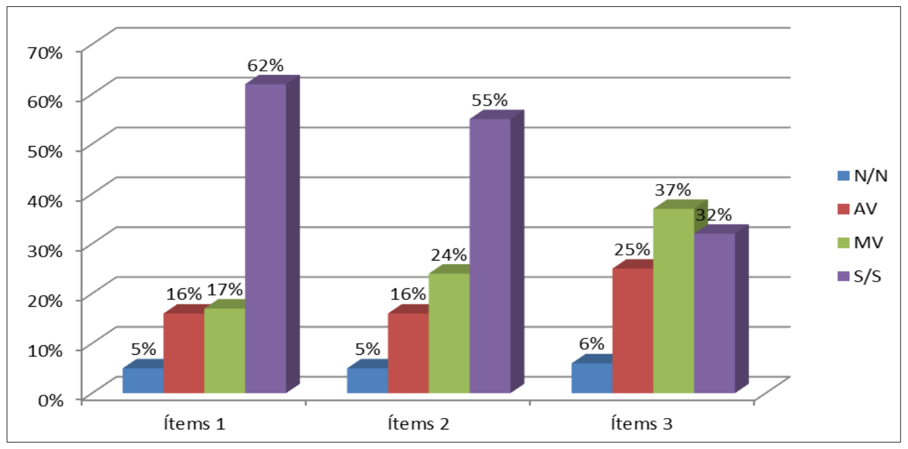
Fuente: Rozo Morales
Dimensión organización
A continuación, se presentan los resultados obtenidos cuantitativamente de la dimensión
organización, para lo cual se toman en cuenta: a) La estructura organizativa está representada de
acuerdo a los niveles y las responsabilidades; b) Las decisiones a tomar por la directiva consideran
las opiniones de delegados y especialistas; c) Los responsables de la dirección del IAPET realizan
reuniones con los niveles estratégicos, tácticos y operativos, con el fin de establecer los planes de
patrullaje; y d) Los responsables de dirección del IAPET, son proactivos en el liderazgo para
afrontar las tareas cotidianas. Al analizar el ítem 4, referente a la estructura organizacional un
34,00% considera que la estructura organizativa está representada acorde a los niveles y
responsabilidades, es decir, entendemos por la estructura la manera como se distribuyen y
representan los elementos que componen la organización. Las reglas mínimas de estandarización
para los cuerpos policiales (2010), establece que la estructura organizativa debe ser de tres niveles
de organización: el nivel superior, nivel de apoyo y nivel sustantivo, de esta manera se busca la
desconcentración de los servicios por áreas o territorios de despliegue policial (figura 2).
En cuanto al ítem 5, el cual se refiere a la toma de decisiones el 40,00% señala que alguna
vez se consideran las opiniones de los delegados, al respecto Diez, García, Martin & Periañez
(2000) señala que “la toma de decisiones es la función mediante la cual el administrador elige una
o más alternativas, tras haber analizado y reflexionado sobre las alternativas posibles y su
contribución a la resolución de problemas” (p. 5). El ítem 6, que se refiere al establecimiento de
reuniones con otros organismos de seguridad para el patrullaje conjunto, el 42,00% considero que
siempre se realizan, aunado a esto, un 27,00% considera como muchas veces, lo que en total
representa un 69,00%, lo que indica que las actividades de coordinación entre los entes policiales
permiten desempeñar mejor sus acciones de seguridad, lo que a su vez incide en aspectos como la
cobertura, horas- hombre, vehículos. Finalmente, el ítem 7 indaga respecto al liderazgo proactivo,
el 36,00% considera que muchas veces se observa que los directivos están enmarcados en este
estilo de líder, Pola, J. (s/f) lo describe como aquellos sujetos que tiene la habilidad de influir a
otros para hacer cosas, participan y cooperan con sus acciones y siempre buscando las maneras de
mejorar (figura 2).
Figura 2. Estructura organizacional, toma de decisiones, liderazgo
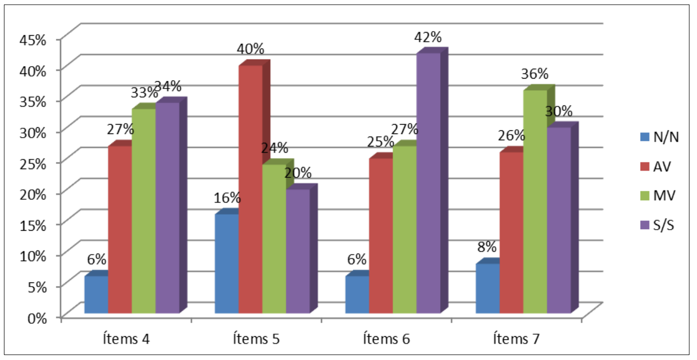
Fuente: Rozo Morales
Al estudiar las respuestas del ítem 8, referente a si el nivel estratégico realiza reuniones de
trabajo con los niveles tácticos y operativos, el 41,00% de los encuestados respondió
afirmativamente que siempre se realizan reuniones, Diez, García, Martin & Periañez (2000) nos
hablan de la importancia de la articulación estratégica, la cual está dirigida a desdoblar en planes
tácticos específicos las acciones a ser desarrollados y ejecutados por otros órganos situados en otros
niveles de la organización. En cuanto al ítem 9, al averiguar si los responsables de dirección delegan
funciones y responsabilidades, el 60,00% respondió de manera afirmativa siempre hacerlo, Moreno
(2014) al comentar este principio administrativo, el mismo se refiere a encontrar la persona idónea
para encomendarle una tarea acorde a sus cualidades y perfil profesional (figura 3).
Figura 3. Coordinación de trabajo, asignación de responsabilidades
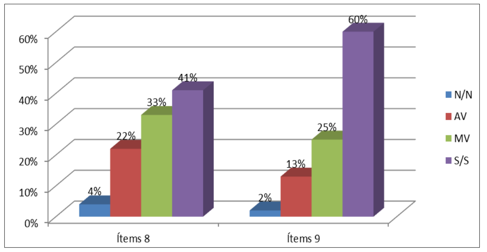
Fuente: Rozo Morales
Dimensión de supervisión
A continuación, se presentan los resultados de la dimensión supervisión, en donde se indaga
respecto al seguimiento al desarrollo de los planes establecidos. Al respecto, el 40,00% de los
encuestados responden que siempre, y si a esto consideramos un 30,00% que opina muchas veces,
en sumatoria representa el 70,00% que consideran que los miembros de la junta directiva realizan
seguimiento a los planes estratégicos establecidos (figura 4). Para Requeijo (2008):
…este proceso de conocer a través del control como se están haciendo las cosas y los
resultados que se obtienen, es con la finalidad de medir, reunir información y
retroalimentara los niveles gerenciales para tomar decisiones, replantear, apoyar y
corregir desviaciones detectadas” (p. 170).
Figura 4. Seguimiento de planes
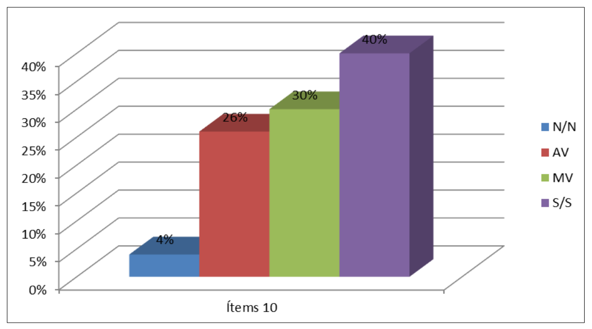
Fuente: Rozo Morales
Dimensión control
Al analizar las respuestas de la encuesta referido al a la dimensión control que incluye ítems
concernientes a: a) Si la Junta directiva del IAPET, informa los objetivo y metas alcanzados
periódicamente a los funcionarios policiales y b) Si se evalúan la ejecución de los planes
establecidos. A veces los objetivos y metas alcanzados son dados a conocer. Los objetivos
establecen hacia donde se dirige una actividad, es decir, lo que se pretende hacer en el marco de la
organización; Diez, García, Martin & Periañez (2000), señalan al respecto que los objetivos están
interconectados de manera que la consecución de uno de ellos incide en el logro de los demás.
En el ítem 12, el 35,00% de los consultados considera que muchas veces y el 30,00% señalan
como siempre, que en total suman el 65,00% que de manera afirmativa consideran que los
miembros de la Junta directiva evalúan dichos planes. La evaluación de una actividad nos indica
el grado en que un objetivo es alcanzado, las informaciones del mismo deberán servir de base para
planificar nuevas acciones. Para Gento (1998) la evaluación constituye el proceso de recolección
de información a fin de valorar la calidad y los logros para tomar decisiones de mejora, con el
propósito de optimizar el proceso de ejecución, aprovechar mejor los recursos, así como también
reajustar los objetivos establecidos de ser necesario.
Figura 5. Logros alcanzados, evaluación de ejecución
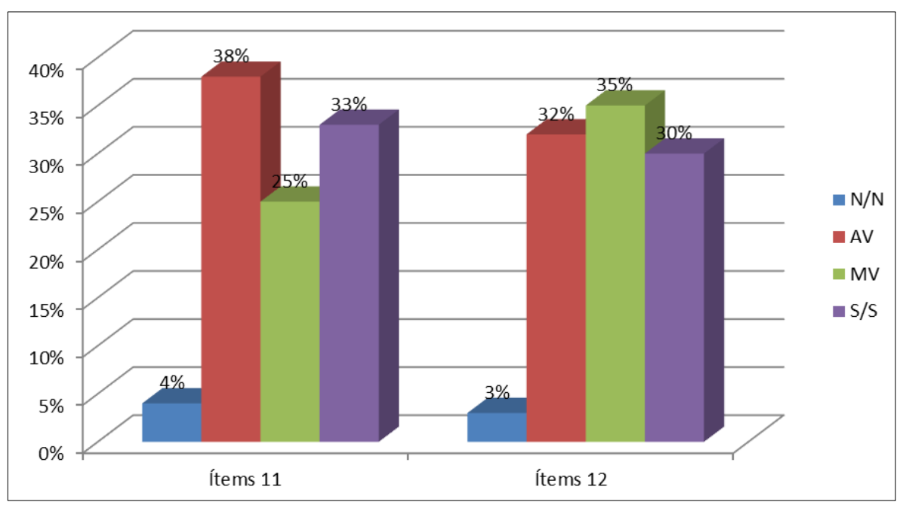
Fuente: Rozo Morales
Desarrollo organizacional en función de las políticas públicas de seguridad ciudadana
Dimensión Plan Operativo Anual (POA)
A continuación, se presentan los resultados en términos porcentuales, de la dimensión POA,
la cual se constituyó con preguntas que contemplan información sobre: a) El análisis de las
fortalezas, y debilidades de la organización para elaborar el plan operativo; y b) Sí los directivos
del IAPET establecen objetivos y metas claras en el plan operativo anual correspondiente. En el
ítem 13, el 38,00% de los encuestados está de acuerdo que el IAPET, algunas veces realiza el
análisis de las fortalezas y debilidades de la organización para establecer el POA, el estudio
diagnóstico nos revela con claridad, cuales acciones se deben potenciar para mejorar el
funcionamiento y proyección institucional. David (1988) considera como un mecanismo técnico y
gerencial que permite la formulación, ejecución y evaluación de acciones que permite a una
organización logre sus objetivos. El proceso implica la identificación de las debilidades y fortalezas
internas, las amenazas y oportunidades, la fijación de objetivos, el desarrollo de estrategias
alternativas, el análisis de dichas estrategias y la decisión de cual escoger (figura 6).
Respecto al ítem 14, el 38,00% de los participantes manifestaron que muchas veces los
directivos del instituto establecen de forma clara los objetivos y metas de forma clara para el
referido plan, en este mismo sentido el 28,00% considera que siempre lo que totaliza un total de
un 66% que señalan como tendencia afirmativa. González & Jiménez (2003) señalan que los objetivos
proporcionan un sentido de dirección a las personas que trabajan en la organización, son
una guía para la acción y ayudan a priorizar la energía directiva y de toda la institución; es decir
los objetivos son importantes ya que los mismos direccionan lo que se pretende realizar
institucionalmente y evitar las improvisaciones (figura 6).
Figura 6. Diagnóstico, objetivos y metas
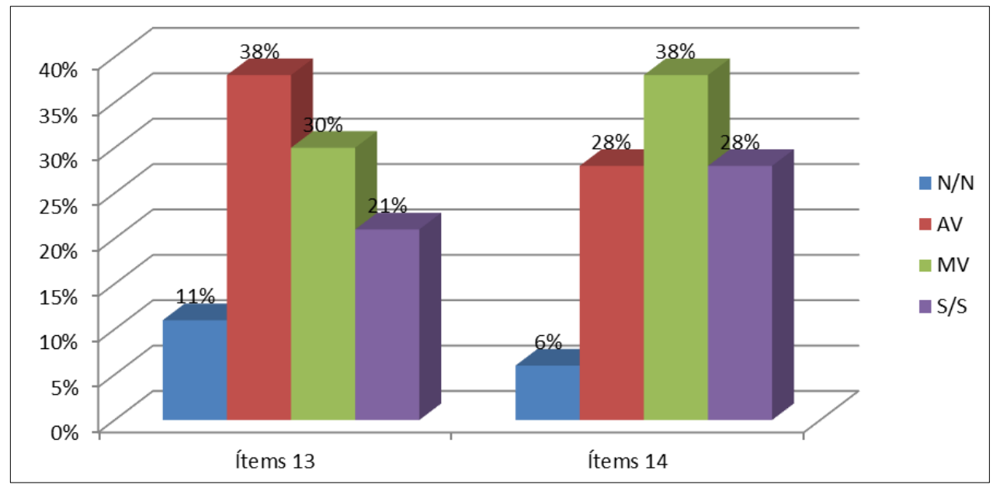
Fuente: Rozo Morales
Dimensión política públicas de seguridad ciudadana
Al analizar las respuestas correspondientes a esta dimensión que contempla aspectos
vinculados con: a) Al establecimiento por parte de los directivos del IAPET, de reuniones de
coordinación con otros organismos de seguridad para establecer planes patrullaje en el estado, b)
Si se crean planes operativos de vigilancia y patrullaje en el área de su responsabilidad y c) A la
realización de patrullajes mixtos con otros organismos de seguridad en la jurisdicción de su
responsabilidad. Al describir las respuestas suministradas por los encuestados se observa en el ítem
15, que el 56,00% de los participantes informan que los responsables de la dirección del IAPET,
siempre realizan reuniones de coordinación con otros organismos, con el fin de establecer planes
de patrullaje conjuntos esta acción es de suma importancia ya que evita la duplicidad de esfuerzos
(figura 7). Al respecto, en el diario La Nación (27/09/2017), Ramón Cabeza, Comisionado de
Seguridad Ciudadana de la Gobernación del Táchira señaló:
…el trabajo que se está realizando de manera conjunta con la Fuerza Armada, los
cuerpos de seguridad, los entes adscritos al Ministerio de Relaciones Interiores, Justicia y Paz, viene a
consolidar a través de las políticas del Estado, el llamado a la paz en el
marco de esta gran actividad que hemos denominado Táchira por la paz.
Al estudiar el ítem 16, el 44,00% de los encuestados está de acuerdo que siempre se
establecen planes operativos de vigilancia y patrullaje en su área de responsabilidad, la atención a
las zonas y cuadrantes de las comunidades que están en la zona de influencia, esto constituye un
medio para vincularse con la comunidad, de acuerdo a lo señalado en el diario La Nación
(20/10/2018) por el General de División José Noguera Silva, Director de Poli Táchira, “esta
planificación consiste en un trabajo articulado por parte de los diferentes órganos de seguridad,
prevención y socorro que hacen vida en esta entidad, con la finalidad de velar por la tranquilidad y
paz del pueblo del Táchira”. En el ítem 17, el 42,00% de los consultados señalan que siempre se
realizan patrullajes mixtos con otros organismos de seguridad en su área de responsabilidad, afín
de atacar el delito y brindar protección a la ciudadanía. La colaboración interinstitucional es
fundamental para atender de forma amplia los sectores que están bajo el área de influencia lo que
incide en costos operativos (figura 7).
Figura 7. Políticas públicas de seguridad ciudadana
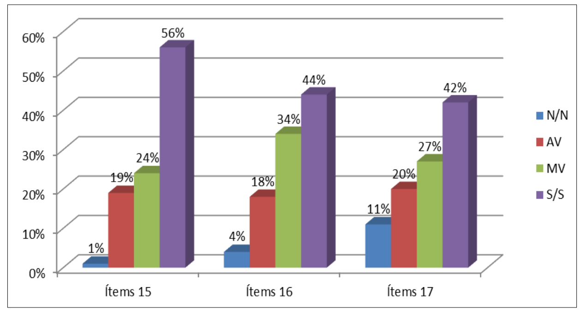
Fuente: Rozo Morales
Dimensión índice criminológicos
En el siguiente apartado se presentan los resultados en términos porcentuales, de esta
dimensión, la cual se constituyó con preguntas que contemplan información relativa a que los
responsables de la dirección del IAPET, a) Realizan permanentemente el análisis del
comportamiento delictivo; y b) Informan al personal operativo el comportamiento delictivo y las
zonas más críticas. Al describir el ítem 18 relativo al análisis del comportamiento delictivo, el
35,00% de los participantes señalo que muchas veces los responsables de la dirección del
I.A.P.E.T., realizan permanentemente el análisis del comportamiento delictivo, aunado a ello el
32,00% señala que siempre, en sumatoria representan el 67,00%. Aguirre (2016) señala la
importancia de desarrollar estrategias tecnológicas oportunas para la prevención social de la
violencia de esta manera se contribuye a las políticas de prevención (figura 8).
El Observatorio Venezolano de la Violencia considera, que el registro de sucesos es una
actividad que ha permitido elaborar mapas georreferénciales del delito, mediante la técnica del
posicionamiento espacial, el propósito es facilitar una base de información que favorece la
visualización y análisis de la violencia en el territorio, lo que contribuye a las políticas de
prevención. En cuanto al ítem 19, el 36,00% manifestaron que casi siempre dicho comportamiento
delictivo es informado al personal operativo, que realiza labores de patrullaje. El manual de
sistemas policiales de información e inteligencia, señala que la misma, constituye una información
importante que puede utilizarse para detectar amenazas delictivas, trazar el perfil de los delitos y
los delincuentes conocidos. Esto permite conocer las zonas más críticas en su área de
responsabilidad, de manera que, el funcionario esté preparado para abordarlos (figura 8).
Figura 8. Comportamiento delictivo
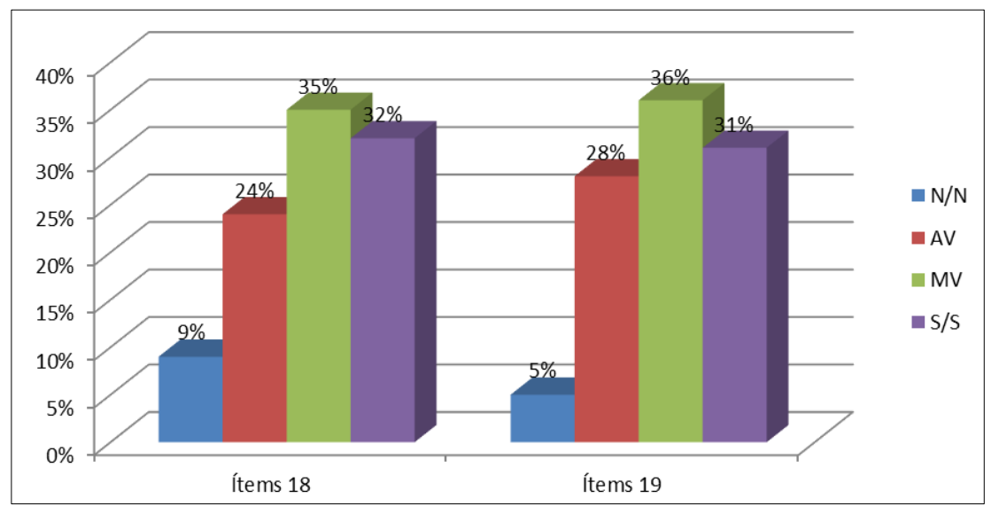
Fuente: Rozo Morales
Dimensión rendimiento operativo
Al analizar las respuestas de la encuesta referida a la dimensión rendimiento operativo que
incluye ítems concernientes: a) Los responsables de la dirección del IAPET realizan el análisis del
rendimiento operativo en su área de responsabilidad; y b) Al final de cada trimestre se realiza un
informe de ejecución del POA. Con relación al ítem 20, se encontró que un 36,00% seleccionó la
opción muchas veces y el 31,00% considera la opción siempre, para un total de 67,00%, al indagar
si se realiza el análisis del rendimiento operativo en las áreas que están bajo su responsabilidad.
Este aspecto es importante valorarlo para estar al tanto de la efectividad de los las tareas y
actividades delegadas. Respecto al ítem 21, el 46,00% de los participantes afirma que al final de
cada trimestre se realiza el informe de ejecución de los objetivos y metas alcanzados en el POA en
el área de responsabilidad en el cual se encuentra asignado. Como se desprende esta acción
evaluativa es de necesario realizarlo para informar a las autoridades directivas del IAPET, de la
ejecución de los planes acorde a lo establecido en la ley (figura 9).
Figura 9. Ejecución y rendición de cuentas
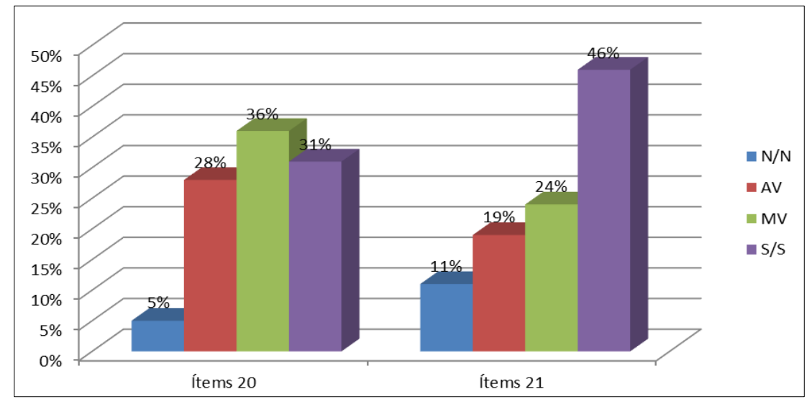
Fuente: Rozo Morales
Dimensión asignación de recursos
En este apartado se presentan los resultados en términos porcentuales, de la dimensión,
asignación de recursos, la cual se constituyó con preguntas que contemplan información sobre: a)
Los recursos económicos asignados por el órgano rector son suficientes para ejecutar las
actividades de la institución, b) La dotación del equipamiento básico a los funcionarios policiales
para el cumplimiento de las actividades ordinarias de la institución, y c) La asignación de vehículos
y motos al IAPET, durante el año 2019, por parte del órgano rector. Con relación a los recursos
económicos asignados por el órgano rector correspondientes al ítem 22, las respuestas de los
encuestados señalan en un 51,00% que no son suficientes para ejecutar las actividades ordinarias
de la institución, estos recursos no es sólo para el pago de personal, hace falta invertir en actividades
formativas, recreativas, de apoyo social, así como también en el mantenimiento y reposición de
recursos tecnológicos y vehicular para prestar una labor eficaz y efectiva en la seguridad de los
ciudadanos. En este sentido, Cedeño (2016) señala el actual presupuesto nacional destina alrededor
del 1% a la seguridad ciudadana. Esto es demasiado poco para hacer frente a uno de los problemas
como lo es invertir de forma extraordinaria en seguridad ciudadana (figura 10).
En relación a la dotación por parte del IAPET que se refiere al ítem 23, el 47,00% de los
funcionarios, califican a la misma como algunas veces., al indagar acerca de la dotación del
equipamiento básico a los funcionarios policiales para cumplir con las actividades ordinarias
establecidas por la institución, como es uniforme, zapatos, cascos y medios básicos para la defensa.
Finalmente, el ítem 24 referido a la dotación de vehículos y motos, los cuales se utilizan en los
planes de patrullaje preventivo en la jurisdicción del Estado Táchira, el 80,00% está de acuerdo
que el IAPET no los ha dotado de dichos medios, los cuales constituyen un medio necesario para
el desplazamiento de los funcionarios en sus labores de resguardo a la comunidad (figura 10).
Figura 10. Recursos
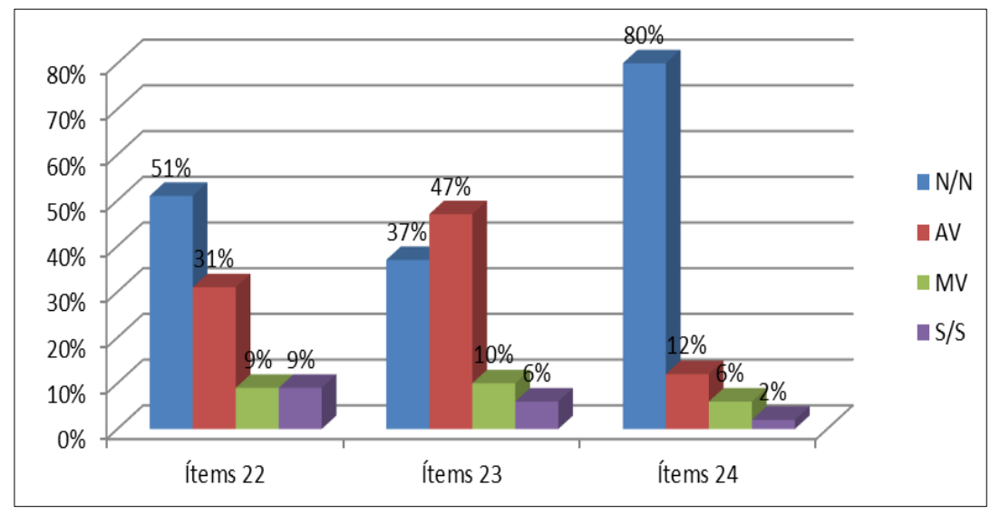
Fuente: Rozo Morales
Cultura Organizacional
Dimensión personal
En este apartado lo que se quiere conocer es la valoración por los encuestados del IAPET, en
relación a la dimensión personal, la cual se constituyó con ítems que contemplan información
sobre: a) La selección del personal está sujeta al perfil profesional, b) La profesionalización de los
funcionarios, c) Los deberes y derechos de los funcionarios, y d) Sobre el régimen disciplinario de
la institución. En lo que respecta al ítem 25 que indaga sobre la selección del personal y su perfil
de competencias, el 38,00% de la muestra indica que algunas veces la selección de personal está
sujeta al perfil profesional exigido por el IAPET, lo que permite inferir que la selección del personal
no es rígida en cuanto a los parámetros establecidos, sino que hay cierta flexibilidad. Para De
Ansorena (2005) la selección de personal implica un proceso estructurado que permite atraer,
evaluar e identificar y seleccionar acorde al perfil profesional a los sujetos, más idóneos para el
desempeño eficaz y eficiente de una cierta labor (figura 11).
En lo que concierne a la profesionalización de los funcionarios que laboran en la misma, al
cual se refiere el ítem 26, el 33,00% señala la opción siempre como la predominante y en segundo
lugar la opción muchas veces en un 29,00%, en sumatoria da 62,00%. La profesionalización es un
aspecto fundamental en el crecimiento profesional. Al respecto, Jiménez (1999) considera que la
misma hace referencia a la necesidad que tienen los sujetos de actualizarse y perfeccionarse por las
exigencias cambiantes de la época, además por la evolución que se viene suscitando en la sociedad
del conocimiento y tecnológica. Al investigar sobre los deberes y derechos de los funcionarios
policiales, establecidos en el ítem 27, el 52,00% de los profesionales de la seguridad señalan la
opción siempre como la más escogida; el Decreto N° 2.175 del 30 de diciembre del 2015, de la
Ley del Estatuto de la Función Policial regulan el servicio de policía (figura 11).
Otro aspecto investigado en esta dimensión es el ítem 28, el cual se refiere el régimen
disciplinario que los controla y regula, al respecto el 44,00% de los encuestados señalan conocerlo,
aunado a ello el 30,00% considera la opción muchas veces, lo que quiere decir que el 74,00% están
al tanto de ello. Álvarez (2019), señala que el tema de la disciplina policial es fundamental pues se
trata de instituciones armadas, de carácter civil, obedientes y profesionales, en las que la
inapropiada aplicación de estos procedimientos la sumiría en la anarquía (figura 11).
Figura 11. Perfil formativo, profesional, deberes y derechos, régimen disciplinario
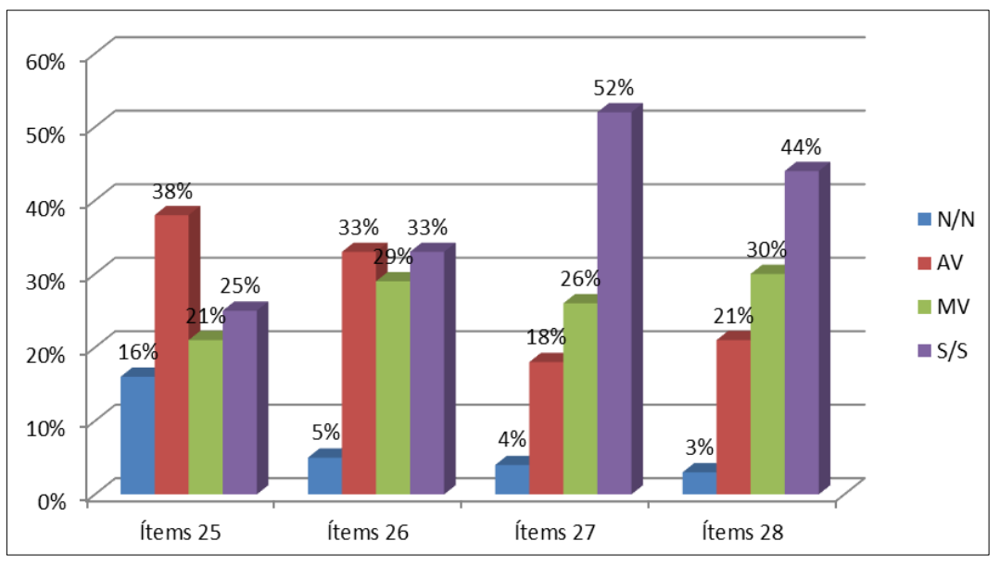
Fuente: Rozo Morales
Dimensión desarrollo de actividades
En este apartado se analizó la opinión de los encuestados con respecto: a) La participación
en actividades que permitan mejorar el rendimiento operativo, en los procedimientos policiales, b)
La solución de conflictos, c) Las comunicaciones están abierto para participar situaciones, que
permitan la mejorar institucional y d) Los procedimientos policiales que se realizan en el IAPET,
son puestos a la orden del ministerio público. Al analizar las respuestas correspondientes al ítem
29, se observó que el 43,00% de los encuestados califican que siempre participan en actividades
que permitan mejorar el rendimiento operativo. Para Rojas (2006) el crecimiento personal es
fundamental para garantizarle en la medida de lo posible el desempeño continuo, de ahí que la
inversión en el perfeccionamiento personal y profesional tiene que ser una política de máxima
prioridad (figura 12).
Con respecto al ítem 30 que valora lo concerniente a la búsqueda de solución de conflictos.
el 35,00% considera la opción muchas veces como la predominante, y el 23,00% considera como
siempre, lo que indica que mayoritariamente se busca dar solución a los conflictos. Al respecto
Diez, García, Martín & Periañez (2000) consideran que en la actualidad en las organizaciones
modernas la connotación de problema ha dejado de tener las connotaciones peyorativas que implica
su consideración como un hecho temible y frustrante, es indispensable encuadrarlo de manera
correcta en la búsqueda de la solución.
El ítem 31 se refiere a la utilización de los canales de comunicación para informar de
situaciones que permitan la mejora institucional, el 34,00% califican como algunas veces participan
en actividades que permitan mejora el rendimiento operativo. Requeijo (2008) considera que en
una organización debidamente estructurada el director mantiene una relación con las diferentes
áreas y personas de la organización e incluso con los usuarios de los servicios que presta la
organización, así como con otros empresas y entes gubernamentales. Como corolario final de este
apartado en el ítem 32 se indaga en lo que respecta a los procedimientos policiales que se realiza
en el IAPET, el 72,00% afirma que siempre son puestos a la orden del ministerio público, la ley de
procedimientos policiales establece los lapsos en que deben ser presentados los casos de
procedimientos que ameritan ser puestos a derecho (figura 12).
Figura 12. Rendimiento operativo, resolución de conflictos, comunicación
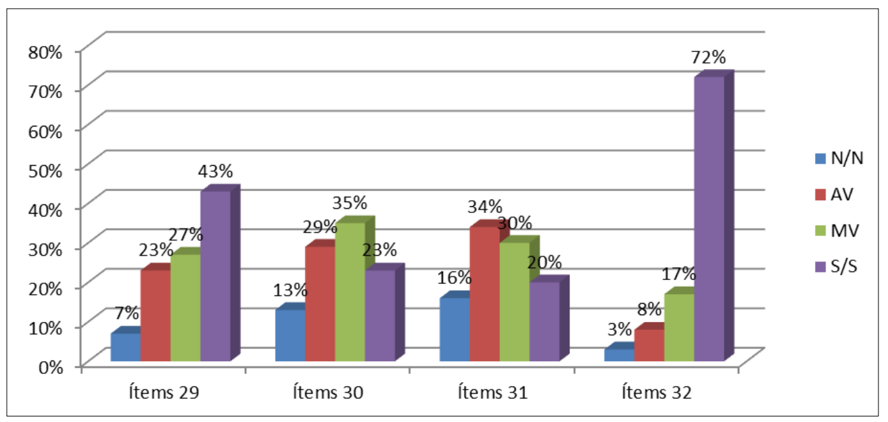
Fuente: Rozo Morales
Dimensión aspectos socio-emocionales
En este bloque se describe la apreciación de los encuestados al indagar si los órganos de
dirección en su accionar: a) Desarrollan actividades formativas como charlas y talleres para mejorar
la autoestima de los funcionarios policiales, b) Motivan a los funcionarios para evitar malas
prácticas y c) Estimulan a los funcionarios destacados mediante condecoraciones y
reconocimientos. En el ítem 33, el 42,00% de los encuestados está de acuerdo que el IAPET,
siempre cuenta con programas de charlas y talleres para el mejoramiento de la autoestima de los
funcionarios policiales. De acuerdo con Robbins (1987), un programa continuo en este caso charlas
y talleres refuerza el comportamiento de los empleados (figura 13).
Al examinar el ítem 34 se encuentra que el 38,00% indica que “muchas veces” y el 30,00%
señala “siempre”, opinan que los responsables de la función de dirección regularmente motivan a
los funcionarios policiales, con el fin de evitar las malas prácticas policiales. Robbins & Judge
(2009) conceptualizan la motivación como aquellos procesos que inciden en la intensidad,
dirección y persistencia en relación al esfuerzo que efectúa un individuo para el logro de un
objetivo. Es decir, es ese ánimo que nos alienta a continuar realizando una labor con dedicación y
esmero. El ítem 35 se evaluó si los funcionarios policiales que mantienen una conducta recta en su
actuación policial, son condecorados y reconocidos por parte de los responsables de la IAPET, al
respecto el 38,00% de los consultados concuerdan que “algunas veces” se lleva a cabo tal actividad.
Robbins (1987) señala cuando en las organizaciones los premios extrínsecos se usan como
recompensa por un desempeño superior, se merma su interés intrínseco, los cuales se vinculan con
lo que realmente al individuo le gusta hacer (figura 13).
Figura 13. Aspectos socios emocionales
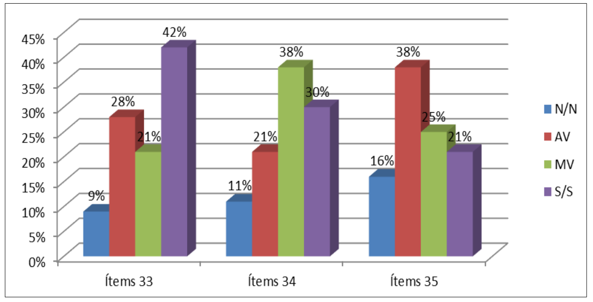
Fuente: Rozo Morales
Dimensión seguridad social del funcionario
Este apartado se conforma con ítems dirigidos a apreciar la opinión con respecto: a) Los
sueldos y salarios y su correspondencia con la labor que cumplen, b) La existencia de planes de
vivienda para los funcionarios y funcionarias policiales y c) La cobertura de la Póliza de Seguro de
Salud Individual y Póliza de Seguro de Exceso de Salud Individual (HCM) es suficiente para cubrir
posibles enfermedades o eventualidad médicas. Al preguntarse en el ítem 36, acerca del sueldo
devengado, el 69,00% de los encuestados afirman que salarios de los oficiales, supervisores y
comisionados, no corresponden con respecto a la labor que cumplen. Al respecto Robbins (1987)
considera que hay una vinculación entre desempeño y sueldo, puesto que este constituye la
principal recompensa percibida por el esfuerzo en su labor (figura 14).
Respecto a los planes de vivienda al cual se refiere el ítem 37, el 47,00% de los consultados
responden de manera contundente que el IAPET, no cuenta con planes de vivienda digna para los
funcionarios policiales. El IAPET es una dependencia adscrita a la Gobernación del Estado, en sus
planes no se hace alusión a la provisión de viviendas para sus funcionarios, lo que hace es tramitar
y apoyar logísticamente la tramitación de los mismos ante el Instituto Nacional de la Vivienda (INAVI). El
último aspecto de esta dimensión es el ítem 38 el cual se refiere al programa de HCM
de los funcionarios, el 80,00% de los participantes considera que la cobertura de hospitalización,
cirugía y maternidad HCM no es suficiente para cubrir posibles enfermedades o eventualidades
médicas. El Director de Talento Humano de la Gobernación de Estado Táchira (La nación, 5 de
octubre del 2019), señaló que este ente cuenta con planes de seguridad para apoyar a los
funcionarios en ciertas patologías médicas (figura 14).
Figura 14. Sueldos y salarios, vivienda y HCM
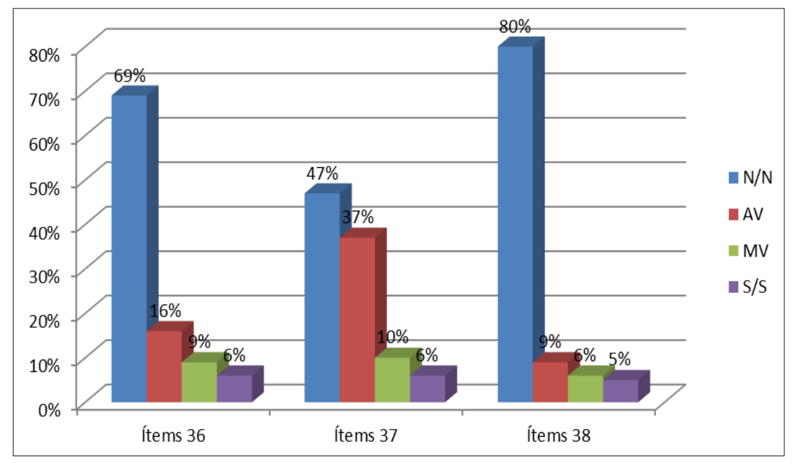
Fuente: Rozo Morales
Dimensión integración policial
Los ítems que integran esta dimensión son: a) La confianza en el cuerpo de policía por parte
de la ciudadanía, b) Las comunidades donde usted presta el servicio de policía, conocen los
números de los cuadrantes de paz ante situaciones de emergencia, c) El acercamiento a las unidades
educativas con el fin de promover charlas orientadoras de prevención de hechos delictivos, d) Es
asertiva la interacción entre los habitantes de las comunidades de su área de responsabilidad, con
el fin de fortalecer el binomio Policía-comunidad y e) Visita de manera regular los establecimientos
comerciales, para identificar los sectores más vulnerables y evitar la comisión de hechos delictivos.
En relación al ítem 39 relacionado en la confianza hacia el cuerpo policial, un 40,00% de los
funcionarios policiales entrevistados indicaron que muchas veces, existe confianza en el cuerpo de
policía por parte de la ciudadanía, en el sector donde los mismos realizan labores de patrullaje preventivo.
Robbins & Judge (2009) conceptualizan la confianza como una expectativa positiva de
que una persona o institución no actúa de manera oportunista con palabras, acciones y decisiones,
la misma es un proceso que se gana en muestras relevantes de acciones y con el tiempo se va
formando (figura 15).
El ítem 40 indaga acerca de si las comunidades donde los servicios, conocen los números
telefónicos de los cuadrantes para llamar en casos de emergencia, el 30,00% de los consultados
afirman que siempre, si a esto consideramos la opción “c”, que indica “muchas veces” la cual es
seleccionada en un 30,00% por los sujetos de la muestra, la tendencia es afirmativa en un 60,00%.
La comunidad debe conocer los números de emergencia del cuerpo policial para así poder llamar
ante la ocurrencia de hechos delictivos o actitudes sospechosas que observen. Respecto al ítem 41
que investiga el acercamiento a los centros educativos donde realizan labores de patrullaje
preventivo, el 38,00% de los funcionarios al realizar su labor, muchas veces y un 32,00%
seleccionaron la opción siempre par un total de 70,00%, se acercan a las unidades educativas con
el fin de promover charlas orientadoras para prevenir los hechos delictivos. Para Díaz (2015) los
centros educativos como instituciones que prestan un servicio a la sociedad tiene la responsabilidad
de preservar la seguridad de sus miembros, la creación de ambientes seguros y saludables es un
prerrequisito para que los procesos de enseñanza sean efectivos, de ahí la importancia del
acercamiento de la policía a los centros educativos que están en su radio de acción (figura 15).
Figura 15. Confianza, cuadrante de paz, visitas a unidades educativas
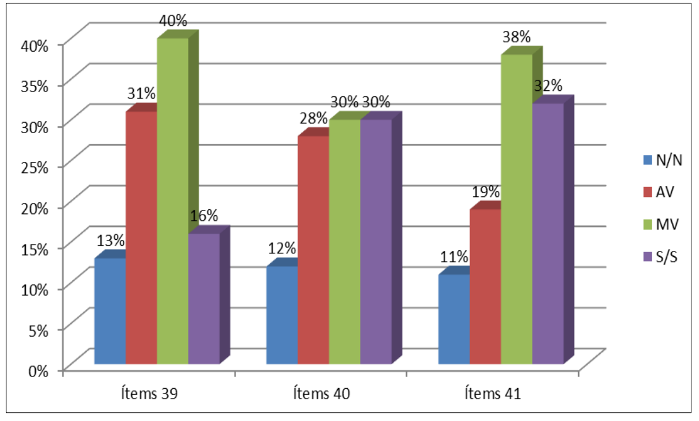
Fuente: Rozo Morales
El segundo bloque de ítem de esta dimensión investiga acerca de: a) El asertividad en la
interacción entre los habitantes de las comunidades de su área de responsabilidad, con el fin de
fortalecer el binomio Policía-comunidad y b) A la realización de visitas de manera regular los
establecimientos comerciales, para identificar los sectores más vulnerables y evitar la comisión de
hechos delictivos. Con respecto al ítem 42 relacionado la interacción asertiva con los habitantes de
las comunidades de su área de responsabilidad, con el fin de fortalecer el binomio Policíacomunidad, al
evaluarse, el 36,00% de los participantes señalan que muchas veces, si a esto se le
suma el 27,00% que responde “siempre” para globalmente totalizar 63,00%. La interacción de la
policía con los miembros de la comunidad significa de acuerdo con Terroni (2009) la habilidad
para exponer en determinado momento, de manera apropiada, oportuna, y directa creencias y
sensaciones, positivas o negativas, aspecto fundamental para establecer el vínculo policíacomunidad de
manera efectiva. En último ítem 43 sobre la visita a establecimientos comerciales
para identificar sectores vulnerables y así prevenir hechos punibles, el 42,00% de los encuestados
siempre que cumplen con esta actividad en el marco de su jornada laboral. En el marco de los
programas de seguridad policial y las áreas de influencia, los funcionarios realizan labores de apoyo
preventivo y de seguridad a establecimientos comerciales para minimizar y combatir delitos (figura
16).
Figura 16. Acercamiento a las comunidades, visita a comercios
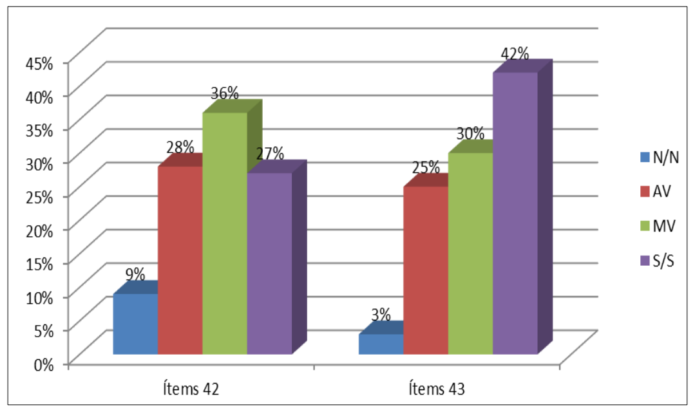
Fuente: Rozo Morales
Preguntas Abiertas
Al indagar en la pregunta abierta acerca de los rasgos característicos de los funcionarios
policiales, las respuestas señalan entre esos aspectos destacan:
- Responsables: un total de 76 participantes.
- Disciplinados: un total de 75 participantes.
- Leales: un total de 29 participantes.
- Respetuoso de las leyes: un total de 25 participantes.
- Honestidad: un total de 23 participantes
Finalmente, se les pregunto acerca de cómo ayudar a mejorar la seguridad ciudadana en el
área bajo su responsabilidad, las respuestas se relacionan con:
- Primera opción: un total de 59 participantes coincidieron, que para mejorar la
seguridad ciudadana es necesario, Establecer planes de vigilancia y patrullaje en
conjunto con la comunidad para fortalecer el binomio policía comunidad.
- Segunda opción: 32 participantes concordaron, que se debe aumentar el pie de fuerza
policial, así como también mejorar la dotación de vehículos y motos para cumplir con
las tareas propias del servicio de policía.
- Tercera opción: un total de 17 participantes, señalaron que se debe usar las (redes de
información primaria) de la comunidad con el fin de identificar los sitios más
vulnerables en cuanto a la incidencia criminal.
Conclusiones
Los aportes de los funcionarios policiales en la investigación permiten saber cómo se lleva a
cabo el proceso de planificación, conocen la misión y visión institucional, su opinión sobre la
formación de equipos de trabajo para planificar los planes a desarrollar y que los planes de trabajo
se dividen de acuerdo al tiempo en que se realizaran. En cuanto a la de organización manifiestan
que conocen la estructura organizativa, consideran que no toman en cuenta la opinión de los
delegados a la hora de la toma de decisiones. Así mismo, en lo que respecta a las reuniones de
coordinación con otros cuerpos policiales declaran que las mismas concurren y destacan también
que el liderazgo es sobre todo proactivo. En relaciona la función directiva la mayoría reiteran que se
realizan reuniones estratégicas entre los niveles de dirección para concretar acciones, de igual
manera opinan que se delegan responsabilidades. En relación a la función supervisión, la mayoría
reconoce el seguimiento a los planes emprendidos por la institución. Por su parte la función de
control, es bueno señalar que el logro de los objetivos es dado a conocer algunas veces y de que se
evalúan los planes establecidos.
Al evaluar la dimensión POA, los resultados suministrados por los funcionarios policiales
nos permiten derivar la imagen de una institución que: utiliza “algunas veces” el diagnostico
estratégico para conocer de los puntos fuertes y debilidades institucionales, para elaborar la
planificación con visión estratégica; manifiestan conocer los objetivos institucionales. Con relación
a las políticas públicas de seguridad ciudadana, revelan estar al tanto de reuniones con otros
organismos para establecer planes de patrullaje conjuntos, así mismo que los mismos se delinean
para atender los cuadrantes de paz y patrullajes mixtos. Referente a la valoración de los índices
criminológicos, el consenso es que se lleva un registro de los hechos delictivos y estos son
informados al personal operativo. Con relación al rendimiento operativo la tendencia prevaleciente
es que siempre se realiza la evaluación del rendimiento, además trimestralmente se informa de ello
a los órganos correspondientes; en cuanto a la asignación de recursos valoran de forma negativa
los aspectos contemplados para el funcionamiento; en lo económicos manifiestan que los mismos
insuficientes para desarrollar las actividades, así mismo consideran que tienen serias dificultades
ante las carencias de dotación del equipamiento básico y sobre la asignación vehículos para el
desplazamiento en sus labores.
En la dimensión sobre el personal; manifiestan que tiene serias dudas a la hora de la selección
del personal en cuanto al cumplimiento de las normas y al perfil profesional, es decir, no son tan
estrictos; señalan como positivo la profesionalización, conocer el régimen disciplinario, sus
deberes y derechos. Al reflexionar en relación a la dimensión relacionada con el desarrollo de
actividades para mejorar el rendimiento operativo manifiestan participar en este tipo de actividades,
califican positivamente la solución a los conflictos y opinan moderadamente, al hablar sobre los
canales de comunicación para informar situaciones que lleven a la mejora institucional. La
dimensión socioemocional revela que se dan charlas y talleres para mejorar la autoestima, también
los motivan para evitar malas prácticas y que algunas veces su labor es recompensada con
condecoraciones. Al examinar los resultados de dimensión Seguridad social, los funcionarios policiales
consideran que el sueldo no se corresponde con la labor que realizan, además que no
existen planes de vivienda y el seguro de HCM es insuficiente. En lo que respecta a la dimensión
integración policial los resultados de la encuesta revelan que hay cierto grado de confianza en el
cuerpo policial, también el número telefónico del cuadrante es conocido por la comunidad para
llamar en caso de emergencia, que existe grado de acercamiento a las instituciones escolares y de
integración con la comunidad, así como también señalan la propensión a visitar los comercios que
están en su área de influencia para prevenir hechos delictivos. Entre los rasgos resaltantes de los
funcionarios policiales destacan la responsabilidad y la disciplina como los más resaltantes, en
segunda instancia la lealtad, ser respetuosos y honestos.
Referencias
- Ary, D. (1982). Introducción a la investigación pedagógica. México: Editorial Interamericana.
- Aguirre, J. (2016). La aplicación de las tecnologías de información y comunicación en la
prevención
comunitaria del delito. Los casos de georreferenciación en Monterrey, México. Revista de
Relaciones Internacionales, Estrategia y Seguridad, 11(2). DOI:
https://doi.org/10.18359/ries.1878
- Álvarez, J. (01 de septiembre 2019). El Régimen disciplinario policial. primicia.com.ve.
Obtenido
de https://primicia.com.ve/opinion/el-regimen-disciplinario-policial/
- Arias, G. (2.012). El Proyecto de Investigación. Venezuela: Ediciones Episteme.
- Benedito, V, Ferrer, V. & Ferreres, V. (1995). La Formación Universitaria a Debate. España:
Universitat de Barcelona.
- Burgos Moncada, J. J. (2020). Caracterización estratégica del impuesto predial en el municipio
de
Cúcuta a 2019. Revista Gestión y Desarrollo Libre, 5(10), 127-141. Obtenido de
https://revistas.unilibre.edu.co/index.php/gestion_libre/article/view/8098
- Burgos Moncada, J. J. (2018). Productividad y competitividad de Bucaramanga y Cúcuta: Factores
claves del desarrollo sostenible en el marco de la economía del conocimiento. Revista
Gestión y Desarrollo Libre, 3(6), 81-101. Obtenido de
https://revistas.unilibre.edu.co/index.php/gestion_libre/article/view/8144
- Cano, E. (2003). Organización, calidad y diversidad, aula abierta. México: La Muralla.
- Carrasco, J. (2000). Aprendo a investigar en educación. España: Ediciones RIALP.
- Cedeño, L. (2016). Asociación Civil Paz Activa. Caracas, Venezuela: ACPA.
- Chiavenato, I. (2010). Introducción a la teoría general de la administración. (5ta. Ed.).
México:
Editorial McGraw Hill.
- Constitución de la República Bolivariana de Venezuela (1999). Gaceta Oficial Extraordinaria Nº
5.453 marzo 24 del 2000.
- Corredor, J. (1986). La planificación estratégica. Valencia, Venezuela: Editores Vadell
Hermanos.
- Corredor, J. (1986). La planificación, enfoques y propósito para su aplicación. Valencia,
Venezuela:
Editores Vadell Hermanos.
- David, F. (1988). La gerencia estratégica. Primera edición. Bogotá. Colombia: Editorial Legis.
- De Ansorena, A. (2005). 15 pasos para la selección de personal. España: Editorial Paidós
- Decreto N° 2.175 de fecha 30 de diciembre de 2015, con Rango, Valor y Fuerza de Ley de Reforma
de la Ley del Estatuto de la Función Policial.
- Diario La Nación. (27 de septiembre del 2007). San Cristóbal. Táchira, Venezuela.
- Diario La Nación. (20 de octubre del 2018). San Cristóbal. Táchira, Venezuela.
- Díaz, A. (2015). La gestión de la seguridad integral en los centros educativos. Facilitadores y
obstaculizadores. (Trabajo doctorado). España: Universidad Autónoma de Barcelona.
- Diez, E., García, Martin, F., & Periañez, F. (2000). Administración y dirección. (1era. Ed.),
España:
McGraw Hill.
- Eslava Zapata, R. (2021). Pasivos ambientales y métodos de valoración económica. Infometric@ -
Serie Sociales y Humanas, 4(2). Obtenido de
http://infometrica.org/index.php/ssh/article/view/166
- Eslava Zapata, R. (2020). Responsabilidad social universitaria: perspectivas en las
instituciones de
educación superior. En Una Educación Universitaria de Calidad (Tomo II) (págs. 25-32). Venezuela:
Publicaciones Vicerrectorado Académico. Universidad de los Andes –
Venezuela. Obtenido de
http://bdigital2.ula.ve:8080/xmlui/handle/654321/5154;jsessionid=B6234F5DEBDC759A3E1164CC4175E7DD
- Eslava Zapata, R., Chacón Guerrero, E. J., & Gonzalez Júnior, H. A. (2019). Gestión del
Presupuesto
Público: alcance y limitaciones. Visión Internacional (Cúcuta), 2(1), 8-14.
https://doi.org/10.22463/27111121.2603
- Ferrer V., & Molina, E. (1995). La preparación del profesor para el cambio en la institución
educativa (1era. Ed.). Barcelona, España: Editorial Promociones y Publicaciones
Universitarias, S. A.
- Gabaldón, L, G. (2008). Seguridad ciudadana y políticas públicas en Venezuela. Instituto Latino
Americano de Investigaciones Sociales. Obtenido de https://Library.fes.de>pdffiles>bueros>caracas
- Gento, S. (1998). Implantación de la calidad total en instituciones educativas. Madrid. España:
Universidad Nacional de Educación a Distancia.
- Gómez, M. (2006). Introducción a la metodología de la investigación científica, primera
edición.
Córdoba, Argentina: Editorial Brujas.
- Gómez, M. (2004). Evaluación de los servicios sociales, primera edición. Barcelona, España:
Editorial Gedisa.
- Gómez Ortiz, E. J., & Peñaranda Soto, E. (2020). El nuevo liderazgo y la transformación de las
organizaciones del siglo XXI. Revista Gestión y Desarrollo Libre, 5(9), 217-235. Obtenido
de https://revistas.unilibre.edu.co/index.php/gestion_libre/article/view/8113
- Gonzalez Júnior H. A. (2018). Clima Organizacional: estudio empírico en un restaurante de
Viçosa,
Minas Gerais, Brasil. Revista Gestión y Desarrollo Libre, 3(6), 177-197. Obtenido de
https://revistas.unilibre.edu.co/index.php/gestion_libre/article/view/8150
- González, A. & Jiménez, J. (2003) evaluación de instituciones. Investigación e innovaciones
educativas. España: CIFO.
- Guevara, J. M. (2018). Calidad de vida, protección de derechos e inclusión social de portadores
del
(VIH) en Cúcuta. Infometric@ - Serie sociales y humanas, 1(2), 1-17. Obtenido de
http://www.infometrica.org/index.php/ssh/article/view/74
- Hernández S., & Rodríguez, R. (2006). Introducción a la administración teoría general
administrativa: origen, evolución y vanguardia (4ta. Ed.). México D. F., México: Editorial
McGraw Hill Interamericana.
- Jiménez, B. (1999). Evaluación de la formación del profesorado síntesis. Madrid. España:
Educación.
- Lerma, H. (2008). Metodología de la investigación. Propuesta, anteproyecto y proyecto, 3era.
Edición. Bogotá, Colombia: Ecoe Ediciones.
- Ley Orgánica del Servicio de Policía y del Cuerpo de Policía Nacional Bolivariana. (2008).
Gaceta
Oficial 5.880, 9-4-2008, reformada el 4-12-2009.
- Lukas, J., & Santiago K. (2004). Evaluación educativa. Psicología y educación, primera edición.
Madrid, España: Editorial Alianza.
- Méndez, C. (2003). Metodología de la investigación. Guía para la realización de proyectos de
investigación. Bogotá. Colombia: McGraw Hill.
- Mogrovejo, J. M., Herrera Martínez, S. V., & Maldonado, L. G. (2019). Estrategias para impulsar
el
agroturismo rural en Municipio de Gramalote Norte de Santander. Revista Gestión y
Desarrollo Libre, 4(7), 188-205. Obtenido de
https://revistas.unilibre.edu.co/index.php/gestion_libre/article/view/8138
- Moreno, E. (2014). Perfiles profesionales y valores relativos al trabajo. Ciencias
Psicológicas, 8(2),
129-138. Obtenido de http://www.scielo.edu.uy/scielo.php?script=sci_arttext&pid=S1688-42212014000200003
- Núñez Barrios, E. D. (2018). Los informes de fiscalización autonómica de los órganos de control
externo: rendición de cuentas. Revista Gestión y Desarrollo Libre, 3(5), 102-124. Obtenido
de https://revistas.unilibre.edu.co/index.php/gestion_libre/article/view/8188
- Palella, S., & Martins, F. (2010). Metodología de la investigación cuantitativa. Caracas.
Venezuela:
Fedeupel.
- Pola, J. (s/f). Características de un líder proactivo. Obtenido de
www.escuelaeuropeaexcelencia.com>2015/02
- Pulido Huertas, D. C. (2018). Gestión del conocimiento y las tecnologías de la información y la
comunicación (tic). Infometric@ - Serie Sociales y Humanas, 1(1). Obtenido de
http://cienciometrica.com/infometrica/index.php/ssh/article/view/3
- Prada Torres, O., Eslava Zapata, R., Chacón Guerrero, E., & Gonzalez Júnior, H. A. (2019).
Gestión
editorial: tratamiento de la información periodística. Sapienza Organizacional, 6(11), 200 –
219. Obtenido de
http://erevistas.saber.ula.ve/index.php/sapienza/article/download/15104/21921926201
- Raynaud, N. C., & Mogrovejo Andrade, J. M. (2018). El desarrollo y financiación de la
infraestructura en Colombia. Revista Gestión y Desarrollo Libre, 3(5), 184-190. Obtenido de
https://revistas.unilibre.edu.co/index.php/gestion_libre/article/view/8212
- Requeijo, D. (2008). Administración y gerencia. 1era. Edición. Caracas, Venezuela: Editorial
Biosfera.
- Restrepo, L., & Rivera, H. (2008). Análisis estructural de sectores estratégicos (2ª ed.).
Bogotá:
Faculta de Administración, Universidad del Rosario, Colección de Textos de administración.
Colombia.
- Robbins, S. (1987). Comportamiento organizacional. Conceptos, controversias y aplicaciones.
México: Prentice-Hall. Hispanoamericana.
- Robbins, S., & Judge, T. (2009). Comportamiento organizacional. México D. F. México: Editorial
Prentice-Hall.
- Rodríguez, Y., Ochoa N., & Pineda, M. (2008). La experiencia de investigar. Recomendaciones
precisas para realizar una investigación y no morir en el intento, 3era Edición. Valencia,
Venezuela: Editorial Universidad de Carabobo.
- Rojas, J. (2006). Gestión educativa, en la sociedad del conocimiento. Bogotá, Colombia:
Cooperativa Editorial Magisterio.
- Steiner, G. (1986). Planificación estratégica, lo que todo director debe saber. México D. F.
México:
Compañía Editorial Continental S. A.
- Stracuzzi, P., & Martins F. (2012). Metodología de la investigación cuantitativa (3ª ed.).
Caracas,
Venezuela: FEDUPEL.
- Stoner, J., Freeman, E., & Gilbert, D. (1996). Administración. México: Prentice-Hall.
Hispanoamericana.
- Suárez, T., Montoya, C., Jaramillo, C., & Rivera, H. (2010). Turbulencia empresarial en
Colombia:
caso sector bebidas no alcohólicas. Colombia: Faculta de Administración, Universidad del
Rosario.
- Terroni, N. (2009). La Comunicación y la Asertividad del Discurso durante las Interacciones
Grupales Presenciales y por Computadora. Psico-USF, 14(1). DOI:
https://doi.org/10.1590/S1413-82712009000100005

 Licenciado en Administración.
rozo717@gmail.com.
Licenciado en Administración.
rozo717@gmail.com.